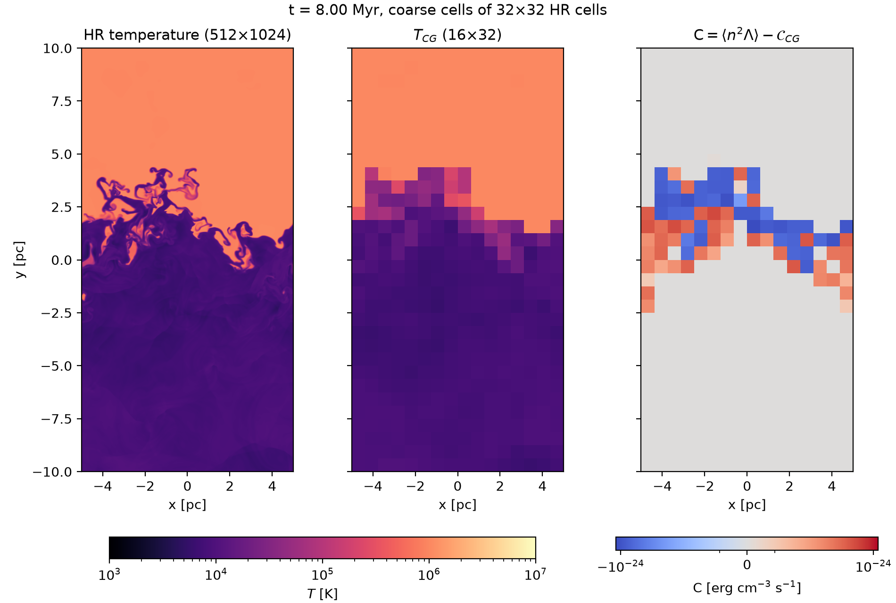
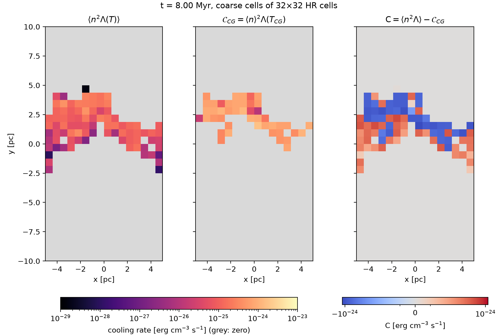
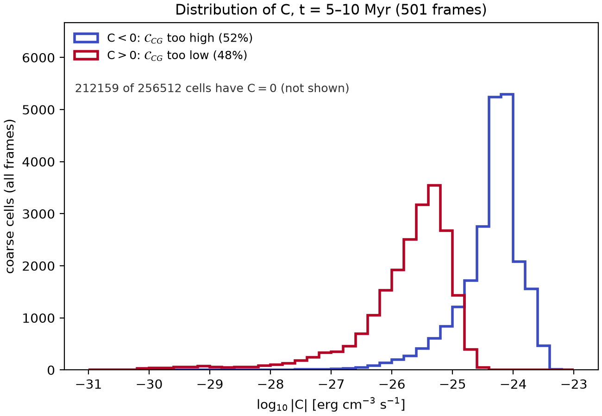
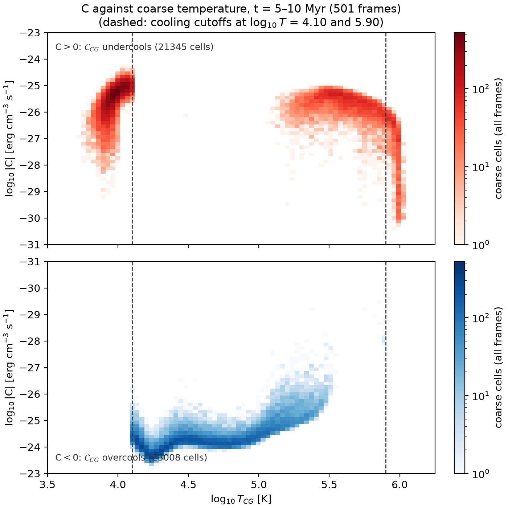
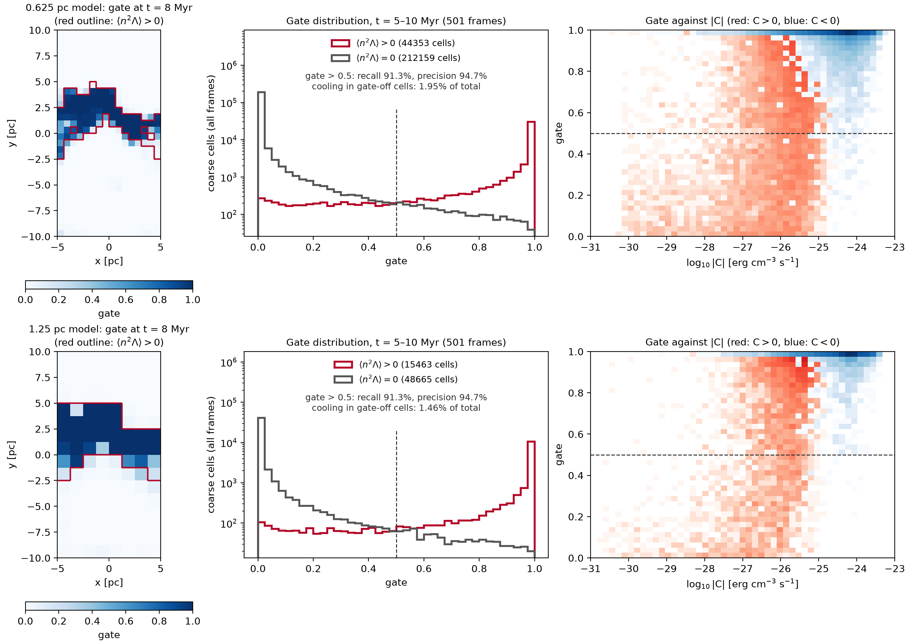

Subgrid Terms in the compressible Euler Equation
1 The Unfiltered Equations
We begin with the Euler Equations in conservative form:
\begin{aligned} \partial_t \rho + \nabla\cdot(\rho\mathbf{v}) &= 0 \\ \partial_t (\rho\mathbf{v}) + \nabla\cdot(\rho\mathbf{v}\mathbf{v} + P\,\mathsf{I}) &= 0 \\ \partial_t \left( \frac 1 2 \rho \mathbf{v}^2 + \frac{P}{\gamma - 1} \right) + \nabla\cdot\big[\left(\frac 1 2 \rho \mathbf{v}^2 + \frac{\gamma P}{\gamma -1} \right)\mathbf{v}\big] &= -\dot{\mathcal{E}} \end{aligned} \tag{1}
where \rho is the gas mass density, \mathbf v is the fluid velocity, P is the thermal pressure, \mathsf I is the identity tensor. The total energy density can be written as
E = \frac{P}{\gamma - 1} + \frac 1 2 \rho \left|\mathbf v\right|^2
where \gamma = 5/3. Using the ideal gas EOS,
P = \frac{\rho k_B T}{\mu m_p}
where T is the gas temperature, k_B is the Boltzmann constant, m_p is the mass of the proton, and \mu = 0.62 is the mean molecular weight. The radiative cooling per unit volume is given by
\dot{\mathcal{E}} = n^2 \Lambda(T), \qquad n = \frac{\rho}{\mu m_p}
where n is the number density and \Lambda(T) is the cooling function.
2 The Filtering Approach
Given a filtering kernel G_\Delta(\mathbf x) , The filtering operation can be defined as:
\bar{f}(\mathbf x, t) = \int G_\Delta(\mathbf x - \mathbf x')f(\mathbf x', t)\mathrm{d}^3 x', \qquad \tilde{f} = \frac{\overline{\rho f}}{\bar \rho}
Where \tilde f is the density weighted average or the Favre average.
For a top hat kernel, the filtering can be written as
\langle f \rangle = \frac{1}{V_\mathrm{cell}} \int f d^3x
Germano’s generalised central moments for a pair of fields a and b is defined as
\tau(a,b) = \widetilde{ab}- \tilde a\tilde b= \widetilde{\delta a \delta b}
where \delta a = a - \tilde a is the fluctuations about the mean of the field. By construction, \widetilde{\delta a} = 0.
For three fields a, b, and c, we can write
\tau(a, b, c) = \widetilde{a b c} - \tilde a \tau(b,c) - \tilde b \tau(c, a) - \tilde c \tau(a, b) - \tilde a \tilde b \tilde c
3 Coarse Graining the Equations
\begin{aligned} \frac{\partial}{\partial t} \langle \rho \rangle + \mathbf{\nabla} \cdot \langle \rho \mathbf{v} \rangle &= 0 \\ \frac{\partial}{\partial t} \langle \rho \mathbf{v} \rangle + \mathbf{\nabla}\cdot\left[ \langle \rho \mathbf{v} \mathbf{v} \rangle + \langle P \rangle \mathsf{I} \right] &= 0 \\ \frac{\partial}{\partial t} \left\langle \frac 1 2 \rho \mathbf{v}^2 + \frac{P}{\gamma - 1}\right\rangle + \mathbf{\nabla}\cdot\left\langle \left(\frac 1 2 \rho \mathbf{v}^2 + \frac{\gamma P}{\gamma -1}\right) \mathbf{v} \right\rangle &= - \langle n^2 \Lambda(T) \rangle \end{aligned} \tag{2}
We can expand the term \langle \rho \mathbf{v} \mathbf{v} \rangle to get
\langle \rho \mathbf{v} \mathbf{v} \rangle = \frac{\langle\rho \mathbf{v} \rangle \langle\rho \mathbf{v} \rangle}{\langle \rho \rangle} + \mathsf{R}_{\rho vv} \tag{3}
\mathsf{R}_{\rho vv} is a symmetrical tensor that can be read as the residual momentum-flux tensor. We can also write it in terms of Favre averaged velocities,
\mathsf R_{\rho vv} = \langle \rho \rangle \widetilde{\mathbf v \mathbf v} - \tilde v \tilde v
Using Germano’s central moments, we can write the components of the tensor.
\mathsf R_{ij} = \langle\rho \rangle \tau(v_i, v_j)
We can expand the term \langle \rho \mathbf{v}^2 / 2\rangle as
\langle\frac{\rho \mathbf{v}^2}{2} \rangle = \mathrm{Tr}\langle \frac{\rho \mathbf v \mathbf v}{2} \rangle
We can decompose this with the relation in Equation 3.
\left\langle\frac{\rho \mathbf{v}^2}{2} \right\rangle = \frac 1 2\mathrm{Tr}\left\langle \frac{\langle\rho \mathbf{v} \rangle \langle\rho \mathbf{v} \rangle}{\langle \rho \rangle}\right\rangle + \frac 1 2 \mathrm{Tr}\left(\mathsf{R}_{\rho v v}\right)
We can use this decomposition to find pressure from the total energy.
\frac{\langle P \rangle}{\gamma -1} = \langle E \rangle - \left[ \frac 1 2\mathrm{Tr}\left\langle \frac{\langle\rho \mathbf{v} \rangle \langle\rho \mathbf{v} \rangle}{\langle \rho \rangle}\right\rangle + \frac 1 2\mathrm{Tr}\left(\mathsf{R}_{\rho v v}\right) \right] \tag{4}
Claim: Under a Galilean boost \mathbf{v} \to \mathbf{v}' = \mathbf{v} + \mathbf{V} (constant \mathbf{V}, with \mathbf{x}' = \mathbf{x} + \mathbf{V}t), the subgrid terms \mathsf{R}_{\rho vv}, is unchanged.
Proof: Under the boost, the scalars \rho, P, T are unchanged, so \langle\rho\rangle' = \langle\rho\rangle and \langle P\rangle' = \langle P\rangle. The momentum transforms as
\langle \rho\mathbf{v}\rangle' = \langle\rho(\mathbf{v}+\mathbf{V})\rangle = \langle\rho\mathbf{v}\rangle + \mathbf{V}\langle\rho\rangle .
Define the resolved velocity \tilde{\mathbf{v}} \equiv \langle\rho\mathbf{v}\rangle/\langle\rho\rangle, so that \tilde{\mathbf{v}}' = \tilde{\mathbf{v}} + \mathbf{V}. From the definition,
\mathsf{R}_{\rho vv} = \langle\rho\mathbf{v}\mathbf{v}\rangle - \langle\rho\rangle\tilde{\mathbf{v}}\tilde{\mathbf{v}} .
Boosting the first term:
\langle\rho\mathbf{v}'\mathbf{v}'\rangle = \langle\rho\mathbf{v}\mathbf{v}\rangle + \mathbf{V}\langle\rho\mathbf{v}\rangle + \langle\rho\mathbf{v}\rangle\mathbf{V} + \langle\rho\rangle\mathbf{V}\mathbf{V}.
Boosting the second term:
\langle\rho\rangle\,\tilde{\mathbf{v}}'\tilde{\mathbf{v}}' = \langle\rho\rangle\tilde{\mathbf{v}}\tilde{\mathbf{v}} + \mathbf{V}\langle\rho\mathbf{v}\rangle + \langle\rho\mathbf{v}\rangle\mathbf{V} + \langle\rho\rangle\mathbf{V}\mathbf{V}.
The cross terms and the \mathbf{V}\mathbf{V} term are identical and cancel in the difference, so
\mathsf{R}'_{\rho vv} = \mathsf{R}_{\rho vv}.
We can also define a similar Energy Flux term \mathsf{Q}, such that
\langle(E + P) \mathbf{v} \rangle = \left( \langle E \rangle + \langle P \rangle \right) \frac{\langle \rho \mathbf{v} \rangle}{\langle \rho \rangle} + \mathsf{Q}_E \tag{5}
Let us define the specific total enthalpy, h_t \equiv (E+ P)/\rho. Then we can expand \langle (E +P) \mathbf v \rangle = \langle \rho \rangle \widetilde{h_t \mathbf v} and \langle E \rangle + \langle P \rangle = \langle \rho \rangle \widetilde{h_t}. With this setup, the energy flux can be written as
\mathsf{Q}_i = \langle\rho \rangle \left[ \widetilde{h_t v_i} - \widetilde{h_t}\tilde{v_i} \right] = \langle \rho \rangle \tau(h_t, v_i)
h_t can be decomposed further into a thermal and kinetic part.
h_t = h + \frac 1 2 v_j v_j \qquad h\equiv \frac{\gamma}{\gamma - 1} \frac{P}{\rho}
Since \tau is linear in its first argument,
\mathsf Q_i = \langle \rho \rangle \tau(h, v_i) + \frac{1}{2}\langle \rho \rangle \tau(v_j v_j, v_i)
The first term can be written as
\mathsf{Q}_i^{(\mathrm{th})} = \langle \rho \rangle \tau(h, v_i) = \frac{\gamma }{\gamma - 1}\left[ \langle P v_i\rangle - \langle P \rangle \tilde v_i \right]
This gives us a thermal/enthalpy flux.
Let’s write v_j = \tilde v_j + \delta v_j to expand the second term.
v_j v_j = \tilde v_j \tilde v_j + 2 \tilde v_j \delta v_j + \delta v_j \delta v_j
\tau(v_j v_j, v_i) becomes 2 \tilde v_j \tau(v_j, v_i) + \tau(v_j, v_j, v_i), which can be substituted into the kinetic part to get
\mathsf{Q}_i^{(\mathrm{kin})} = \langle \rho \rangle \left[ 2 \tilde v_j \tau(v_j, v_i) + \tau(v_j, v_j, v_i) \right]
The first term can be written in terms of the momentum flux tensor, giving us the total energy flux term as
\mathsf{Q}_i = \tilde v_j \mathsf{R}_{ij} + \frac 1 2 \langle \rho\rangle\tau(v_j, v_j, v_i)+ \langle \rho \rangle \tau(h, v_i) \tag{6}
Consider a Galilean transform to \mathbf v \to \mathbf v' = \mathbf v + \mathbf V.
Under the boost, \delta \mathbf{v} and all the scalars remain unchanged. But \tilde v_j \mathsf{R}_{ij} term is not going to be invariant. So,
\mathsf{Q}_i ' = \mathsf{Q}_i + V_j \mathsf{R}_{ij}
Finally, we write the emissivity \langle \dot{\mathcal{E}} \rangle with a correction term \mathsf{C}.
\langle n^2 \Lambda(T)\rangle = \left[ \left(\frac{\langle \rho \rangle}{\mu m_p}\right)^2 \Lambda \left(T \right) \right] + \mathsf{C} \tag{7}
The first term in Equation 7 is the coarse/resolved cooling, and the second term is just how much it is off by, a cooling correction term. Everything we’re dealing with here are scalars, so this will be invariant.
4 Final Set of Equations
Let us write \mathbf m = \rho \mathbf v as the momentum density.
\begin{aligned} \frac{\partial}{\partial t} \langle \rho \rangle + \mathbf{\nabla}\cdot \langle \mathbf m \rangle &= 0 \\ \frac{\partial}{\partial t} \langle \mathbf m \rangle + \mathbf{\nabla}\cdot \left(\frac{\langle \mathbf m \rangle \langle \mathbf m \rangle}{\langle \rho \rangle} + \mathsf{R}_{\rho vv} \right) + \mathbf{\nabla}\langle P \rangle &= 0 \\ \frac{\partial}{\partial t} \langle E \rangle + \mathbf{\nabla}\cdot \left[ \frac{\left(\langle E \rangle + \langle P \rangle\right) \langle \mathbf m \rangle}{\langle \rho \rangle} + \mathsf{Q} \right] &= -\left( \frac{\langle \rho \rangle}{\mu m_p} \right)^2 \Lambda(T) - \mathsf{C} \end{aligned} \tag{8}
\mathsf{R}_{\rho vv} has 9 components, but is a symmetric tensor so only 6 independent quantities (xx, yy, zz, xy, xz, yz). \mathsf{Q} will have 3 components. \mathsf C has one component, totalling to 10 unknowns we have to learn.
5 Constraining the Cooling term.
From Equation 7, we have the subgrid cooling term \mathsf{C}.We can also write the resolved cooling given by \mathcal C_{CG} = \left( \frac{\langle \rho \rangle}{\mu m_p} \right)^2 \Lambda(T_{CG}) which is just the first term in Equation 7.

Figure 1 shows that \mathsf C is only non-zero in the mixing layer, where a coarse cell contains both hot and cold gas. Pure hot or pure cold cells have \mathsf C = 0, because the fine and coarse temperatures then agree. Within the layer, \mathsf C is negative in the upper, hot-side cells and positive in the lower, cold-side cells, so the sign of the correction depends on where the cell sits in the layer.

Figure 2 shows why. On the hot side of the layer, \mathcal C_{CG} is roughly an order of magnitude larger than the true cooling: averaging hot and cold gas puts T_{CG} in the range where \Lambda is large, even though little of the gas in the cell is actually at that temperature. On the cold side, T_{CG} falls below the lower cooling cutoff, so \mathcal C_{CG} = 0 even though the cell contains thin filaments of warm gas that are cooling.

Over t = 5–10 Myr, 17% of the coarse cells have \mathsf C \neq 0, split almost evenly between the two signs (Figure 3). The two distributions are offset, however: the median |\mathsf C| is about 20 times larger for \mathsf C < 0 than for \mathsf C > 0. Integrated over the domain, \mathcal C_{CG} therefore overestimates the total cooling by a factor of about 4.6. At the same time, 35% of the cooling cells have \mathcal C_{CG} = 0, and these carry 17% of the true cooling.

Figure 4 shows that the sign of \mathsf C is set mostly by T_{CG}:
- For 10^{4.1} < T_{CG} < 10^{5.2} K, essentially every cell overcools, with |\mathsf C| \sim 10^{-24} erg cm^{-3} s^{-1}. The error is largest just above the lower cutoff.
- For T_{CG} > 10^{5.5} K, essentially every cell undercools.
- Below the lower cutoff, \mathcal C_{CG} = 0 and every cell undercools by its full true cooling.
- Between 10^{5.2} and 10^{5.5} K both signs occur in similar numbers, so T_{CG} alone does not determine \mathsf C there.
A model for \mathsf C therefore needs more than the coarse temperature. It has to know how the gas in the cell is distributed in temperature, which is what the PDF approach for \mathcal C above is designed to provide.
5.1 How well does the gate identify cooling cells?
The CNN predicts a gate g \in (0, 1) for each coarse cell. It switches the predicted temperature PDF between a single sharp peak (g \to 0) and a broad multiphase distribution (g \to 1). The gate is trained against the binary target “the cell’s temperature PDF has mass in the active cooling window”, which is the same as \langle n^2\Lambda(T)\rangle > 0. Here we ignore the cooling rate the CNN predicts and only ask how well the gate identifies the cells that should cool. We evaluate the two models used in run_variable_box_subgrid.sh (0.625 pc and 1.25 pc cells) on the 512 \times 1024 run for t = 5–10 Myr, coarse-grained to each model’s cell size. Neither model was trained on this run. The figure is produced by gate_evaluation.py.

Figure 5 shows that the gate works well as a detector of where cooling happens:
- The gate is almost binary. Most cells have g < 0.05 or g > 0.95, and the two populations separate cleanly at g = 0.5.
- With g > 0.5 as “on”, both models turn the gate on for 91% of the cooling cells (recall), and 95% of the cells where the gate is on are cooling (precision).
- The cooling cells the gate misses are weak. They carry 2.0% (0.625 pc) and 1.5% (1.25 pc) of the true cooling, and less than 1% of the total |\mathsf C|.
- Almost all of the misses (98–99%) are undercooling cells (\mathsf C > 0). About three quarters of them have T_{CG} below the lower cooling cutoff (median T_{CG} \approx 10^{3.95} K): cold-dominated cells containing only thin filaments of warm gas. By contrast, the gate is on in more than 99.6% of the overcooling cells (\mathsf C < 0), which carry most of |\mathsf C|.
The gate is therefore not the limiting factor for the subgrid cooling. It finds almost all of the cells that matter, and its errors are confined to weakly cooling cells on the cold side of the mixing layer.